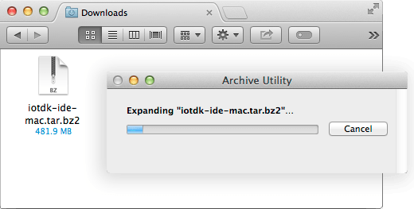

Install Intel® IoT dev kit Eclipse IDE
Get the latest Eclipse IDE for Intel® IoT development. Download the compressed archive containing the customized IDE and extract the contents to your computer.
Important Note: Windows users must use 7-zip for extraction.
-
Get the latest IoT dev kit Eclipse IDE package.
Hackathon attendees:
-
On the USB key: files → [your OS]
-
Copy the appropriate iotdk-ide file to your computer:
- Windows: iotdk-ide-win.7z
- Mac: iotdk-ide-mac.tar.bz2
- Linux: iotdk-ide-linux.tar.bz2
-
Platform-specific instructions:
Windows
-
Use 7zip to extract the archive:
Use 7Zip only. Do not use any other Windows file archiver utility.
7zip supports extended file paths which some of the contents of the compressed file have so only use 7zip software to extract the file.
-
Right-click on iotdk-ide-win.7z.
-
Select “7zip”, then “Extract here”.

-
-
Wait for the extraction process to finish. It will take a a few minutes.
Mac
-
Double-click iotdk-ide-mac.tar.bz2 to extract the contents of the archive.

Linux
-
Extract the contents of iotdk-ide-linux.tar.bz2.
-
Open a new Terminal window.
-
cdinto the directory that contains the .bz2. e.g. If you copied the file to your desktop:cd ~/Desktop/ -
Extract the tar.bz2. The process will take a a few minutes.
tar -jxvf iotdk-ide-linux.tar.bz2
-